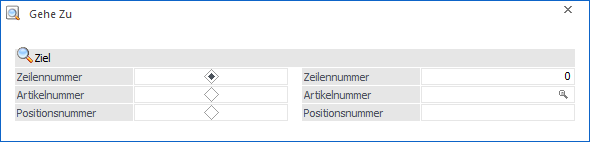

Durch Anwahl des Tabellenbuttons "in Zeilen suchen" in der Belegerfassung (Register "Mitte") wird das Fenster "Gehe zu" geöffnet. Über dieses kann der Fokus schnell auf eine bestimmte Belegzeile gesetzt werden.
Hinweis
Die Funktion steht auch im Register "Detailinfo" der Belegerfassung zur Verfügung (Button "Suchen").

Grundsätzlich besteht der Belegmittelteil aus Zeilen und Spalten. Die Zielzeile kann über Angabe der gewünschten…
ü Zeilennummer
ü Artikelnummer
ü Positionsnummer
… vorgegeben werden. Die Zielspalte ergibt sich aus der Position des Cursors zum Zeitpunkt des Aufrufes der Funktion "in Zeile suchen" (aktuelle Spalte wird beibehalten).
Beispiel
Es wurde ein Beleg geladen und der Cursor befindet sich in der ersten Zeile im Feld "Artikelnummer". Ziel ist es, den Preis des Artikels "4711" zu ändern. Zunächst wird der Cursor im Feld "Preis" positioniert, danach die Funktion "Gehe zu" aufgerufen und die Artikelnummer "4711" eingegeben. Nach Bestätigung mit der Taste Enter, F5 oder durch Anwahl des Buttons "Ok" wird sich der Fokus in das Feld "Preis" des Artikels "4711" gesetzt.
Buttons

Ø Ok
Mit Hilfe des Buttons "Ok" bzw. der Taste F5 wird die Suche ausgelöst. Zusätzlich kann die Suche auch durch bestätigen des Ziels augelöst werden.
Ø Ende
Durch Anwahl des Buttons "Ende" bzw. der Taste ESC wird das Fenster geschlossen.